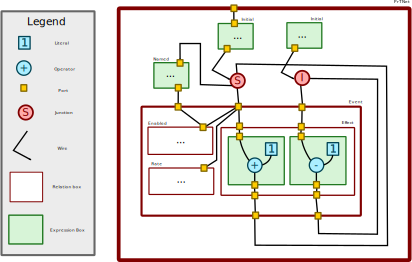

About
EASEL is a modeling language, able to represent compartmental and other scientific models in a concise, human- and machine-readable way. It builds off Galois's experience with the AMIDOL IR, and is intended to supplant it in the long term. It, like the AMIDOL IR, is meant to represent stochastic Petri nets with a form of inhibitor arcs.
What follows is an explanation of this language's format and features by example, the example being an adapted, subset version of the CHIME epidemiological model from UPenn.
models
A model is a named entity (CHIME in the example), followed by a set of
declarations of state and other variables, followed by a set of declarations of
events that may depend on or modify these variables, modulo some rules.
models are constructed blockwise in a whitespace-sensitive way that should be
familiar to users of YAML and other similar languages.
let-Declared Variables
let s_Initial = 999.0
...
let beta =
cond:
gamma if time <= policy_days0
gamma + 0.1486983 if time <= policy_days1
gamma + 0.0717734 otherwise
Variables declared with let may represent a constant (in the case of
s_Initial) or an expression (in the case of beta). During model
simulation/execution, at use sites, let variable right-hand sides are
inlined. It follows that the value of a let variable might not remain the same
throughout a model (indeed, beta does not). It is also the case that let
variables cannot be modified in an event's effect section.
state-Declared Variables
state Susceptible = s_Initial
state Infected = i_Initial
state Recovered = r_Initial
Variables declared with state differ internally from let-declared variables
in that they may be modified in an event's effect block. These variables may
be used to represent what the model is actually modeling - that is, they may
be the output of an execution/simulation of a model (though they needn't be).
events
event Infect:
...
An event consists of an enabling predicate (a when block), a rate (how
likely this event is to "fire"), and an effect, which describes what happens
when the event fires (an "output predicate", in some previous Galois
literature).
when
when:
Susceptible > 0.0 and Infected > 0.0
An expression defined on let variables and state variables, evaluating to a
Boolean, which determines whether or not an event is able to fire. An event must
have a true when and be chosen stochastically based on its rate in order to
fire.
rate
rate:
beta * (1 - contact_rate) * Susceptible * Infected / total_pop
An expression defined on let variables and state variables, evaluating to a
real, which represents the frequency with which an event fires. In simulation,
events would be chosen stochastically based on this value - a rate of 0.8
means at any given time step an event would have an 80% chance of firing.
effect
effect:
Susceptible -= 1.0
Infected = Infected + 1.0
What happens when the model fires. This is a series of assignments, executed in
order, that may change the value of some or all of the state variables in the
model.
Example
model CHIME_GTRI_IR:
let s_Initial = 999.0
let i_Initial = 10.0
let r_Initial = 0.0
state Susceptible = s_Initial
state Infected = i_Initial
state Recovered = r_Initial
let gamma = 1.0 / 14.0
let policy_days0 = 37.0
let policy_days1 = 77.0
let contact_rate = 0.05
let total_pop = Susceptible + Infected + Recovered
let beta =
cond:
gamma if time <= policy_days0
gamma + 0.1486983 if time <= policy_days1
gamma + 0.0717734 otherwise
# or
# let beta =
# if time <= policy_days0
# then gamma
# else if time <= policy_days1
# then gamma + 0.1486983
# else
# gamma + 0.0717734
event Infect:
when:
Susceptible > 0.0 and Infected > 0.0
rate:
beta * (1 - contact_rate) * Susceptible * Infected / total_pop
effect:
Susceptible = Susceptible - 1.0
Infected = Infected + 1.0
event Cure:
when:
Infected > 0.0
rate:
gamma * Infected
effect:
Infected = Infected - 1.0
Recovered = Recovered + 1.0
Donu Documentation
About Donu
Donu is the webservice that is able to run simulations and various kinds of analysis on models for the ASKE-E program.
Calling Convention
All operations are implemented at path / and are indifferent to HTTP verb
(GET, POST, etc.)
Response Convention
All responses return a two-element dict.
On success, the members are "status", which will map to the literal string "success", and "result", which will map to a dict containing whatever is specified below in a command's Response section.
On error, the members are "status", which will map to the literal string "error", and "error", which will map to a string description of the error.
The provided examples reflect this schema.
Types
datasource
A datasource is either an object with the single field file with :
| Field | Type | Description |
|---|---|---|
| file | string | Filename to use as a data source |
Example:
{ "file": "model.gromet" }
Or a string containing the data itself:
"model SIR:\n let beta = 0.4\n let gamma = 0.04\n let s_initial = 997..."
model-def
A model def is a datasource along with a model type. Valid model types are easel, diff-eqs, core, and gromet-prt.
Example:
{
"source": { "file": "modelRepo/easel/sir.easel" },
"type": "easel"
}
Operations
list-models - List the available models
Request:
| Field | Type | Description |
|---|---|---|
| command | string | Command - for this operation it will be the string "list-models" |
Example:
{ "command": "list-models"}
Response:
| Field | Type | Description |
|---|---|---|
| models | list | list of "model-def++" objects - guaranteed to have the same members as a model-def object, but will also include "name" and "description" members for ESL models |
Example:
{
"status": "success",
"result": {
"models": [
{
"source": { "file": "modelRepo/easel/sir.easel" },
"type": "easel",
"name": "SIR",
"description": "No description."
}
]
}
}
simulate - Simulate a model using ODEs
Request:
| Field | Type | Description |
|---|---|---|
| command | string | Command - for this operation it will be the string "simulate" |
| definition | model-def | Definition of the model |
| start | number | Start time of the simulation |
| end | number | End time of the simulation |
| step | number | Simulation time step size |
Example:
{
"command": "simulate",
"definition": {
"type": "easel",
"source": { "file": "modelRepo/easel/sir.easel" }
},
"start": 0,
"end": 120.0,
"step": 30.0,
"parameters": {
"beta": 0.6
}
}
Response:
| Field | Type | Description |
|---|---|---|
| times | list of number | series of times used in simulation |
| values | result series object | values of state varaibles |
The object in values is such that each key is the name of a model variable V and each value is a list l such that V has the value l[x] at time times[x].
Example:
{
"status": "success",
"result": {
"values": {
"I": [
3,
396.20766691080604,
119.33588838987737,
35.943279530151585,
10.825907756942332
],
"S": [
997,
0.0012550867795002216,
2.4726152151230926e-06,
3.7868257221162325e-07,
2.151977671793774e-07
],
"R": [
0,
603.7910780024147,
880.6641091375077,
964.0567200911661,
989.1740920278602
]
},
"times": [
0,
30,
60,
90,
120
]
}
}
get-model-schematic - get schematic description of a model
This call gets a high level schematic description of a model as a graph. Not all models support this visualization.
Request:
| Field | Type | Description |
|---|---|---|
| command | string | Command - for this operation it will be the string "get-model-schematic" |
| definition | model-def | Definition of the model |
Example:
{
"command": "get-model-schematic",
"definition": {
"type": "easel",
"source": { "file": "modelRepo/easel/sir.easel" }
}
}
Response:
| Field | Type | Description |
|---|---|---|
| nodes | list of node | A node has a name and a type |
| edges | list of edge | An edge is a "tuple" mapping one node to another |
{
"status": "success",
"result": {
"nodes": [
{
"name": "Infect",
"type": "event"
},
{
"name": "S",
"type": "state"
},
{
"name": "I",
"type": "state"
},
{
"name": "Remove",
"type": "event"
},
{
"name": "R",
"type": "state"
}
],
"edges": [
[
{
"name": "Infect",
"type": "event"
},
{
"name": "I",
"type": "state"
}
],
[
{
"name": "S",
"type": "state"
},
{
"name": "Infect",
"type": "event"
}
],
[
{
"name": "I",
"type": "state"
},
{
"name": "Remove",
"type": "event"
}
],
[
{
"name": "Remove",
"type": "event"
},
{
"name": "R",
"type": "state"
}
]
]
}
}
get-model-source - get source code for a model
Request:
| Field | Type | Description |
|---|---|---|
| command | string | Command - for this operation it will be the string "get-model-source" |
| definition | model-def | Definition of the model |
{
"command": "get-model-source",
"definition": {
"type": "easel",
"source": { "file": "modelRepo/easel/sir.easel" }
}
}
Response:
The result, if successful, is a model-def object with the source inline.
{
"status": "success",
"result": {
"source": "model SIR:\n let beta = 0.4\n let gamma = 0.04\n\n let s_initial = 997\n let i_initial = 3\n let r_initial = 0\n\n state S = s_initial\n state I = i_initial\n state R = r_initial\n\n let total_population = S + I + R\n\n event Infect:\n when:\n S > 0 and I > 0\n rate: \n beta * S * I / total_population\n effect:\n S -= 1\n I += 1\n \n event Remove:\n when:\n I > 0\n rate: \n gamma * I\n effect:\n I -= 1\n R += 1\n \n ",
"type": "easel"
}
}
convert-model - convert a model from one form to another
May fail if the conversion is not supported.
Request:
| Field | Type | Description |
|---|---|---|
| command | string | Command - for this operation it will be the string "convert-model" |
| definition | model-def | Definition of the model |
| dest-type | string | Model type to convert to - same fields model-def's type field |
{
"command": "convert-model",
"definition": {
"type": "easel",
"source": { "file": "modelRepo/easel/sir.easel" }
},
"dest-type":"diff-eqs"
}
Response:
The result, if successful, is a model-def object with the new model inline.
{
"status": "success",
"result": {
"source": "let beta = 0.4\nlet gamma = 0.04\nlet i_initial = 3.0\nlet r_initial = 0.0\nlet s_initial = 997.0\nlet total_population = S + I + R\nI(0) = 3.0\nR(0) = 0.0\nS(0) = 997.0\nd/dt I = (if 0.0 < S and 0.0 < I then 0.4 * S * I / (S + R + I) else 0.0) + (if 0.0 < I then -0.04 * I else 0.0)\nd/dt R = if 0.0 < I then 0.04 * I else 0.0\nd/dt S = if 0.0 < S and 0.0 < I then -0.4 * S * I / (S + R + I) else 0.0",
"type": "diff-eqs"
}
}
describe-model-interface - describe parameters of a model
Request:
| Field | Type | Description |
|---|---|---|
| command | string | Command - for this operation it will be the string "describe-model-interface" |
| definition | model-def | Definition of the model |
{
"command": "describe-model-interface",
"definition": {
"type": "easel",
"source": {
"file": "modelRepo/easel/sir.easel"
}
}
}
Response
| Field | Type | Description |
|---|---|---|
| stateVars | list of state variable | A state variable has a name and some metadata |
| parameters | list of parameter | A parameter has a name, some metadata, and a defaultValue |
{
"status": "success",
"result": {
"stateVars": [
{
"metadata": {
"Description": "Susceptible population"
},
"name": "S"
},
{
"metadata": {
"Description": "Infected population"
},
"name": "I"
},
{
"metadata": {
"Description": "Recovered population"
},
"name": "R"
}
],
"parameters": [
{
"metadata": {
"Description": "The average number of contacts per person per time, multiplied by the probability of disease transmission in a contact between a susceptible and an infectious subject"
},
"name": "beta",
"defaultValue": 0.4
},
{
"metadata": {
"Description": "Rate of recovery from infection"
},
"name": "gamma",
"defaultValue": 0.04
},
{
"metadata": {
"Description": "Initial population of suceptible people."
},
"name": "s_initial",
"defaultValue": 997
},
{
"metadata": {
"Description": "Initial population of infected people."
},
"name": "i_initial",
"defaultValue": 3
},
{
"metadata": {
"Description": "Initial population of recovered people."
},
"name": "r_initial",
"defaultValue": 0
}
]
}
}
upload-model - Upload a new model
This command may fail if you attempt to overwrite an existing model, or if the model you attempt to upload is not syntactically valid.
Request:
| Field | Type | Description |
|---|---|---|
| command | string | Command - for this operation it will be the string "upload-model" |
| name | string | The (base)name of the model in storage |
| type | string | Model type - same options as model-def's type field |
| definition | string | The model itself, inlined as a string |
Example:
command = {
"command": "upload-model",
"name": "sir.easel",
"type": "easel",
"definition": "model SIR:\n let beta = 0.4\n let gamma = 0.04\n\n let s_initial = 997\n let i_initial = 3\n let r_initial = 0\n\n state S = s_initial\n state I = i_initial\n state R = r_initial\n\n let total_population = S + I + R\n\n event Infect:\n when:\n S > 0 and I > 0\n rate: \n beta * S * I / total_population\n effect:\n S -= 1\n I += 1\n \n event Remove:\n when:\n I > 0\n rate: \n gamma * I\n effect:\n I -= 1\n R += 1\n \n "
}
Response:
The result, if successful, is a model-def object with the new file in the source field.
Example:
{
"status": "success",
"result": {
"source": { "file": "modelRepo/easel/sir.easel" },
"type": "easel"
}
}
PrTNet Gromet Specification
PrTNet Gromet is a JSON based representation of stochastic Petri nets. Abstractly, a stochastic Petri net is a collection of state variables, and a collection of transitions, which specify how the state variables may change. Each state variable has an initial condition, and the format also supports parameterized Petri nets, used to describe a family of related Petri nets.
The specification uses the following concepts:
-
junctions are used to represent the states of the Petri Net
-
boxes are used to group conceptually related entities; in particular the entire model is a box containg the junctions for the state variables, and boxes for the transitions
-
ports are used to mark inputs or outputs of boxes; data only flows in and out of boxes through ports
-
wires are used to specify how data flows around the system; wires may connect two ports, or a port and a junction:
- a wire that flows into a junction indicates setting the value of a state variable
- a wire flowing out of a junction indicates getting the value of a state variable
Top Level Object
A PrTNet Gromet is JSON object with the following form:
PRTNET :=
{ "syntax" = "Gromet"
, "type" = "PrTNet"
, "name" = STRING
, "metadata" = null // XXX: Format to be determined
, "uid" = STRING
, "root" = BOX_ID // The top-level box for the model
, "ports" = [ PORT ]
, "wires" = [ WIRE ]
, "junctions" = [ JUNCTION ]
, "boxes" = [ BOX ]
}
Unique Identifiers
The specifications uses various forms of unique identifiers, which are all strings, but we give them explicit names to indicate what entities they identify.
BOX_ID := STRING
PORT_ID := STRING
WIRE_ID := STRING
JUNCTION_ID := STRING
Note that these identifiers are unique for a given PrTNet object, but are not globally unique.
Value Types
Most entities also contain a field indicating its type, which may be one of the following:
VALUE_TYPE :=
"T:Real" // The type of real numbers
| "T:Bool" // The type of booleans
Junctions
Junctions are used to represent the states of the Petri Net. They will only appear in the top-level box for the model. Each junction will have the following connections:
- A wire from each event box that may modify the state to the junction
- A wire from an expression box to the junction, specifying the initial state of the variable
- A wire from the junction to each event box that needs to use the value of the variable.
JUNCTION :=
{ "syntax" = "Junction"
, "uid" = JUNCTION_ID
, "type" = "T:State"
, "value_type" = VALUE_TYPE
}
Wires
Wires are used to specify how data flows around the model.
WIRE :=
{ "syntax" = "Wire"
, "uid" = WIRE_ID
, "type" = "T:Directed"
, "value_type" = VALUE_TYPE
, "metadata" = null // XXX
, "src" = PORT_ID | JUNCTION_ID
, "tgt" = PORT_ID | JUNCTION_ID
}
Ports
Ports are used to specify inputs and outputs of a box. Input ports
are of type "T:Input" while output ports are of type "T:Output".
An exception to this is that the ports for the outermost model box
are of type "T:Parameter".
PORT :=
{ "syntax" = "Port"
, "type" = "T:Parameter" | "T:Input" | "T:Output"
, "name" = STRING
, "metadata" = null // Format to be determined
, "value_type" = VALUE_TYPE
, "uid" = PORT_ID
, "box" = BOX_ID // Owner of the port
}
Boxes
Boxes are a generic components used to group related entities. There are two flavors of boxes:
- relation boxes are used for grouping, and may contain other boxes
- expression boxes contain a tree describing a mathematical expression
BOX := REL_BOX | EXPR_BOX
Relation Boxes
Relation boxes have the following format:
REL_BOX :=
{ "syntax" = "Relation"
, "type" = "PrTNet" | "T:Event" | "T:Enable" | "T:Rate" | "T:Effect"
, "uid" = BOX_ID
, "name" = STRING
, "wires" = [ WIRE_ID ] // Wires contained in this box
, "boxes" = [ BOX_ID ] // Nested boxes
, "ports" = [ PORT_ID ] // Ports for the box
, "junctions" = [ JUNCTION_ID ] // Nested junctions
}
Relation boxes are nested as follows:
-
The only box of type
"PrTNet"is the outermost box containing the whole model -
The
"PrTNet"box may contain only"T:Event"boxes and expression boxes; The expression boxes at this level are used for the inital values of the state variables, as well as to name expressions that may be used in multiple places in the model -
An
"T:Event"box is going to have exactly 3 nested boxes:- One of type
"T:Enable" - One of type
"T:Rate" - One of type
"T:Effect"
- One of type
-
A
"T:Enable"box contains a single expression box, describing the enabling condition for the given event -
A
"T:Rate"box contains a single expression box, describing the rate at which this event may occur -
A
"T:Effect"box contains a collection of expression boxes, one for each variable that may be affected by the event.
Only "T:Event" and "T:Effect" boxes have output ports, which are used
to show how state variables are affected by events.
Expression Boxes
Expression boxes contain a mathematical expression. Some have an
output port, which is used to indicate where the expression is used.
Others (e.g. in "T:Enable" and in "T:Rate") do not have an output
port as the expession is only part of the specification.
EXPR_BOX :=
{ "syntax" = "Expression"
, "uid" = BOX_ID
, "name" = STRING
, "tree" = EXPR // Exp
, "ports" = [ PORT_ID ] // Ports for the box
, "wires" = [ ]
, "boxes" = [ ]
, "junctions" = [ ]
}
Mathematical expressions are encoded as follows:
EXPR := LIT_EXPR // A literal
| PORT_ID // Link to a port
| CALL_EXPR // Use of an operator
LIT_EXPR :=
{ "type" = VALUE_TYPE
, "value" = STRING // Value for the literal
, "metadata" = null // Format to be determined
}
CALL_EXPR :=
{ "syntax" = "Expr"
, "call" = OPERATOR
, "args" = [ EXPR ]
}
OPERATOR :=
{ "syntax" = "RefOp"
, "name" = "not" | "exp" | "log"
| "+" | "-" | "*" | "/"
| "lt" | "leq" | "=="
| "and" | "or"
| "if"
}
Example
The following picture is a visualization of a PrTNet document. The ports at the top part of box are input ports, while the ports at the bottom are output ports.

Milestones
M1B
Galois
Uncharted
M2B
Galois
Initial Report of AMIDOL as a Service with ASKE ecosystem
Uncharted
Uncharted initial release of codebase
M3B
Galois
Galois initial code release
Uncharted
Uncharted has updated their code repository